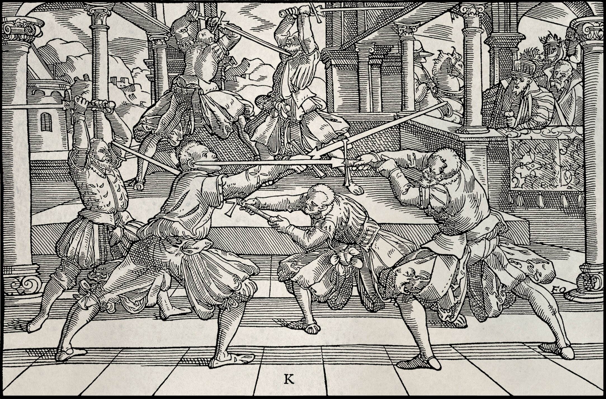
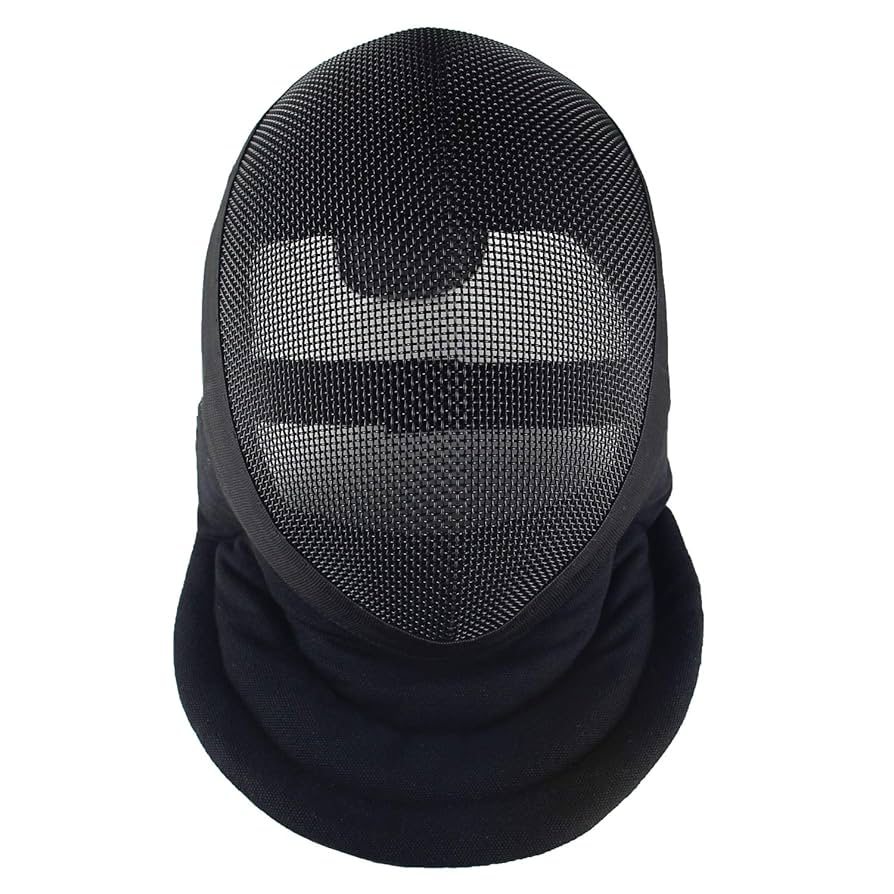
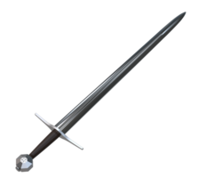

Historical European martial arts (HEMA) is a worldwide phenomenon practiced by people on every continent, not just Europe and the Americas. The internet has made it very easy for information about HEMA to be circulated and translated into several languages, and international shipping to allow for specialty equipment to be purchased from countries where manufacturers reside.
There are HEMA clubs in Asia, South America and even Africa studying European medieval martial arts. That said, the vast majority of clubs are based in Europe and North America, with individual members belonging to a dozen different organizing bodies depending upon what country and club they are affiliated with. As the population of people involved in HEMA are scattered around the world and belong to different affiliations, this makes it difficult to get an accurate assessment of precisely how many people are practicing western historical martial arts but based on online activities we estimate there is somewhere around 200,000 people worldwide participating in HEMA in some capacity.
The hobby is popular enough that several businesses have sprouted up over the past decade to provide specialty equipment and services to HEMA practitioners.
HEMA is based on historical practices and while it utilizes period weapons and sometimes protective equipment, generally speaking clubs engaging in HEMA practices are not engaging in historical re-enactment or LARPing, and most of the protective equipment used by HEMA practitioners are modern designs to improve safety.
The origins of the modern HEMA movement are founded in scholarly research and experimental archaeology. It is now emerging into a sport but the hobby is still centered around recreating the fighting styles of historical European peoples based on surviving source material such as medieval manuscripts and booklets. You can learn more about the development of HEMA as a modern sport by reading our Timeline of the HEMA Movement article.
That said, many people who practice HEMA may also engage in historical re-enactment, LARPing and other kinds of roleplaying activities and bring their knowledge of historical martial art techniques when participating in those other kinds of events. There are also some HEMAist that may put on specialty events which are reenactment in nature as part of their studies.
HEMA is an acronym that stands for 'Historical European Martial Arts'. HEMA is generally regarded as martial arts that are based on surviving dedicated technical treatises and martial arts manuals dated to the Late Middle Ages, Renaissance and the early modern period.
It can also be based on documentation of the fighting methods of classical antiquity (such as Greek wrestling, gladiatorial combat or Roman infantry tactics).
The majority of HEMA practitioners study manuscripts and instructional booklets written many hundreds of years ago, which is referred to as 'source based' study.

Historical fencing manual by Joachim Meyer showing traditional sword positions
HEMA is a way to train your physical condition and it also serves as an outlet, it is the way for people that managed to recover the old manuals to preserve the art of sword fighting. People are also able to forge new bonds by clashing iron against iron, and learn more about the history of usage of these weapons, along with the ways to improve from their more senior peers.
HEMA Weapons and Techniques
The most well known weapons of choice in HEMA would be Longsword, Saber and Rapier, along with their respective offhands if applicable. There's a lot of freedom in weapon choice and flexibility in their combat styles.
Longsword, as it is a two handed weapon, usually functions on its own. Longsword combat focuses on cuts and stabs, with different stances from the "Vier Leger". There are 4 main stances in Meyer's guides, which are Langort (longpoint), Alber (fool), Pflug (plow) and Ochs (ox). All of these basic stances have their own place in combat and is a good foundation for any practitioner to learn.
For Rapier, it is usually paired with a cloth/cape or a dagger. Rapier combat focuses mostly on precise point control as well as stabs, taking off angles and finding openings in your opponent's guards. Rapier has lesser known and named guards, but still prominent: the forward guard, low guard and high guard. They all play different roles - Forward is to poke and provoke, low is to fake openings and high is a defensive position (as a basis for the three stances).
For saber, though it is a single handed sword, offhands are usually not used as they block the flow and style of saber combat. Sabre combat focuses mainly on slashes and is a very freeflow style of combat. It uses the momentum of binds and winding to generate more power into the next cut with deflects and roll offs, usually making for one of the more entertaining styles of combat to watch. Saber, like rapier, has less prominent guards and stances from manuals as they are more freeflow weapons. Sabers also focus a lot on footwork and body rotations to maximize effectiveness.
There are also lesser practiced weapons along with variants of the 3 main weapons mentioned above as well. Some such examples of lesser practiced weapons would be polearms and axes. Some examples of variants of the previously mentioned 3 weapons, would be the kriegsmesser for the longsword, the polish saber for the saber, and the pappenheimer for the rapier.
Sparring and Training
In Historical European Martial Arts (HEMA), sparring is a crucial training method used to apply learned techniques in a dynamic, controlled environment. It allows practitioners to test their skills, improve their understanding of combat principles, and develop muscle memory in a way that static drills or solo practice cannot. Different levels of intensity and gear are used to tailor the sparring experience to various needs and skill levels.
In HEMA, there are 3 more widely agreed on "stages" in learning: there is the "rookie", the "intermediate" and the "expert".
Skill Progression Levels
The "rookies" are when people just starting out and mostly swinging based on instinct and reactions, less technique is involved in their strikes and more of power for power based weapons such as longsword, and more reactionary based defensive maneuvers. At this stage, one would be most susceptible to traps and feints set by others as they are still learning of the capabilities of their weapon as well as their bodies.
The "intermediates" are those that have learned from the manuals, know some theory, and are starting to become more competent in their abilities to spar. These practitioners are able to gauge distance, do general spacing, and are more structured in their strikes, making their form better and more sturdy, which makes it more difficult for an opponent to break their structure. They are also getting more exposed to traps and feints which makes them harder to fool with these tricks, sometimes they even make a few traps and feints of their own.
Both of the aforementioned stages of progression have their own pros and cons, intermediate practitioners become more wary and cautious, often hesitating from overthinking, while rookies tend to take more risks as they are unaware of the consequences. The "experts" however, are the best of both worlds. They tend to hesitate less, take calculated risks, and are equally, if not more cautious than those that are intermediate practitioners. These practitioners are the ones that aren't afraid to clash blades with another as they are fully confident in their skills to deflect, parry, and benefit from the momentum their opponents are using, making the momentum their own and making strikes that way.
Combat Strategy Game
Choose your move and test your tactical knowledge:
You chose: -
Your opponent chose: -
Make your move!
There are different techniques used in every style of weapon but there are some things that remain as they are more general in terms of usage, which all practitioners will learn eventually. Techniques such as spacing, parries, deflects, feints and winding/binds are just a few examples of techniques that are commonly used in HEMA no matter the weapon.
Spacing is a technique used to gauge the distance between yourself and your opponent, and knowing how to manipulate it in order to bring benefits to yourself. One such example would be to remain at a distance just out of your enemy's reach so they either have to make a larger effort to make contact with you, which often leads to them overextending and making their structure less solid, which gives you the upper hand, or making them miss their strike, which gives you more time to make an attack of your own.
Feints are strikes that one can make without fully committing to, trying to provoke a response from your opponent that you can exploit. One such example of feinting would be pretending to strike low, in order to get an evasive reaction from your opponent, only to switch at the last moment and strike high when they are unprepared or exposed. This is a technique used by most intermediates and experts as it puts the practitioner in a favorable position.
These are just two techniques that are often used by practitioners and ones that most people will eventually learn to use to their advantage.
Reaction Time Training Game


Sparring Reaction Game
Goal: Click the helmet to score points
Avoid: Clicking the sword (loses points)
Score: 0
This game gives a glimpse into the reaction times that are needed in a sparring session for HEMA. Sparring in HEMA is fast paced and it is necessary to know how to make critical decisions that will put you in a favorable position.
QR code for mobile
Scan to open this page on your phone
Keyboard Navigation
Use Tab to navigate between interactive elements. Press Enter or Space to activate buttons.